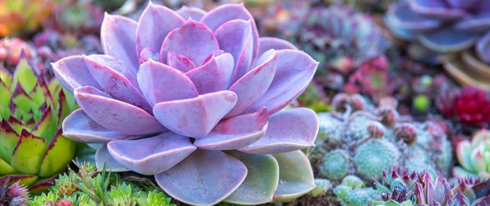

Descubra o prazer de ter plantas em sua vida!
As plantas são mais do que simples elementos decorativos; elas têm o poder de transformar qualquer ambiente, trazendo vida, frescor e uma sensação de bem-estar. Seja em casa, no trabalho ou em qualquer outro espaço, as plantas criam uma atmosfera acolhedora e relaxante, além de purificar o ar e melhorar a qualidade de vida.
Aqui, nós acreditamos que cuidar das suas plantas é uma experiência gratificante e terapêutica. Ajudamos você a aprender tudo o que precisa para manter suas plantas saudáveis e vibrantes. Desde as mais simples até as mais exóticas, nós fornecemos dicas e truques para garantir que suas plantas cresçam fortes e felizes.
Além de beleza, as plantas podem ser uma verdadeira forma de conexão com a natureza, oferecendo um toque de tranquilidade e harmonia ao seu ambiente. Aprenda a dar a elas o cuidado que merecem, e descubra como pequenos gestos, como a escolha do vaso ideal, a rega certa e a exposição à luz, podem fazer toda a diferença.
Aqui, você encontrará não apenas produtos de qualidade, mas também um espaço para aprender, se inspirar e compartilhar seu amor pelas plantas. Vamos juntos criar um lar mais verde e saudável!


• BenefÃcios de Ter Plantas em Casa
Ter plantas em casa vai muito além da estética. Elas ajudam a purificar o ar, reduzem o estresse e podem até melhorar a concentração e a produtividade.
Estudos mostram que ambientes com plantas têm um impacto positivo no humor e na saúde mental. Ter um cantinho verde é como trazer um pedaço da natureza para o seu dia a dia.
• Cuidados essenciais para iniciantes
Se você está começando agora, não se preocupe! Existem plantas ideais para iniciantes, como suculentas, zamioculcas e jiboias, que exigem pouca manutenção. O segredo está em observar: sinta o solo, veja como a planta reage à luz e evite regar em excesso. Com o tempo, você cria uma conexão natural com suas plantinhas e entende exatamente o que elas precisam.
• Transforme Seu Espaço com Verde
Uma varanda pequena, um canto da sala ou até o banheiro podem se transformar com a presença de uma planta. Aposte em vasos bonitos, prateleiras com plantas pendentes ou mini hortas na cozinha. Seja criativo! Cada espaço pode ter um toque verde que traz charme, frescor e personalidade.